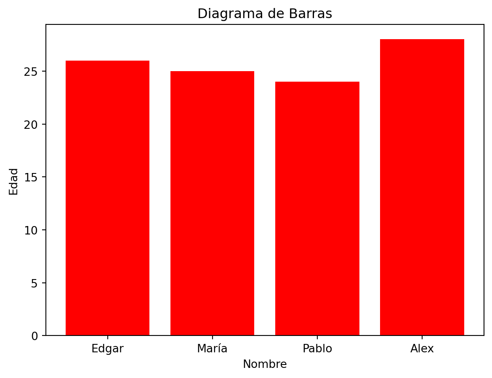
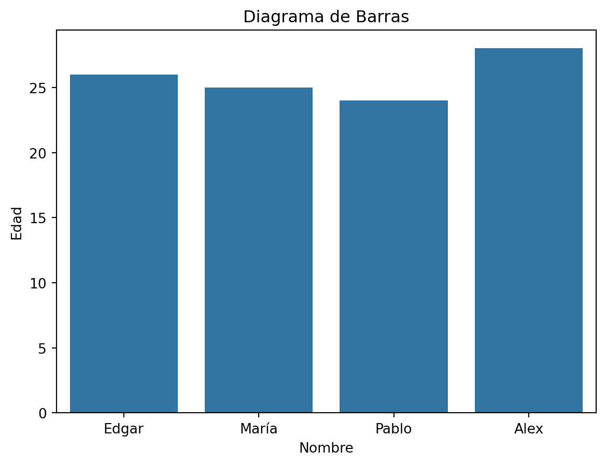
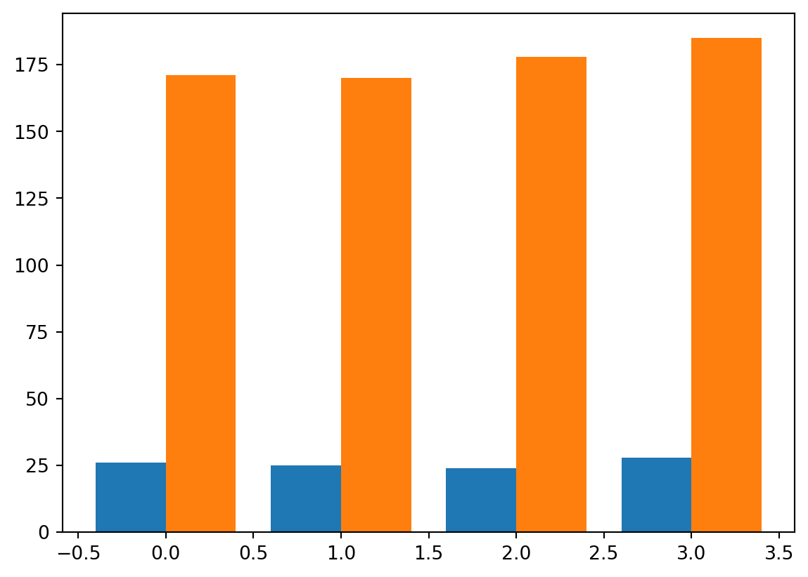
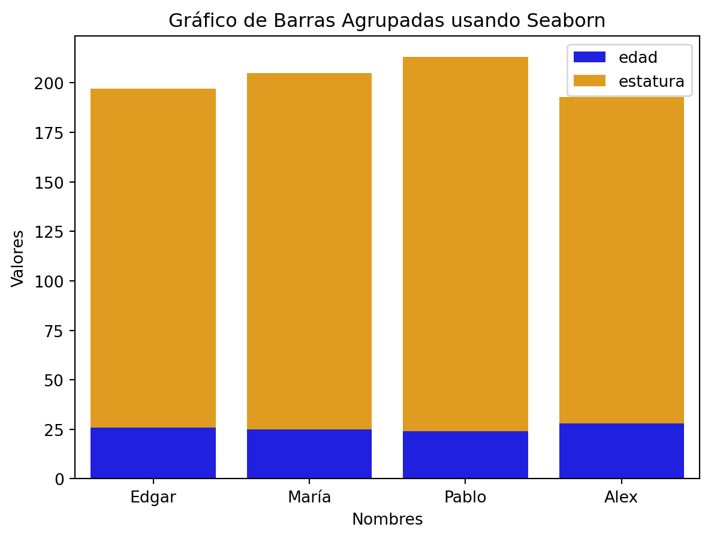
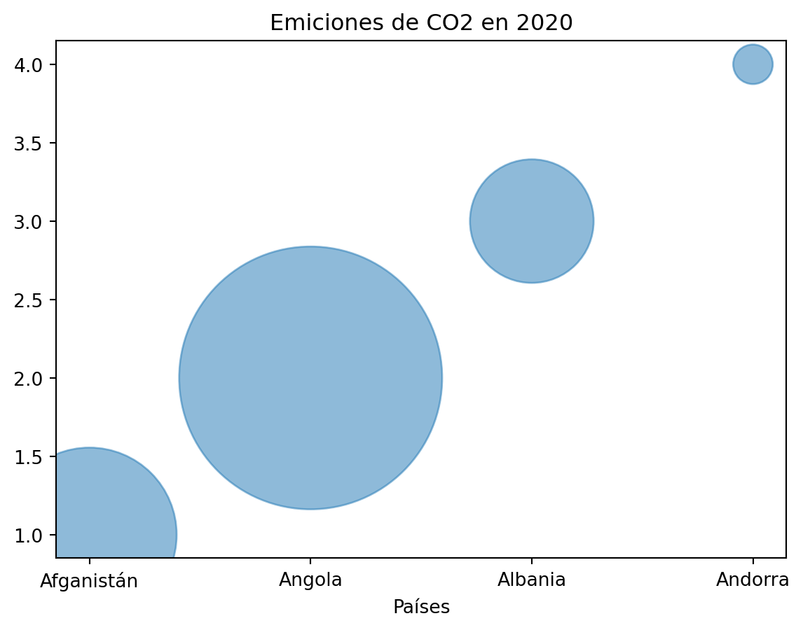
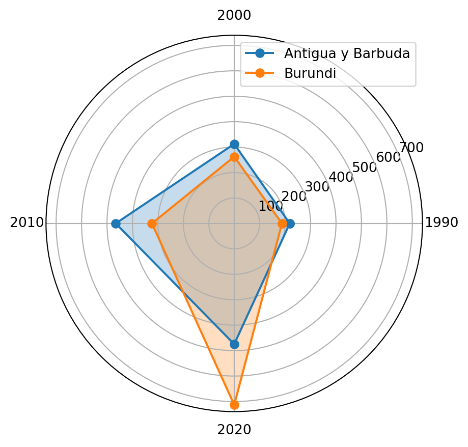
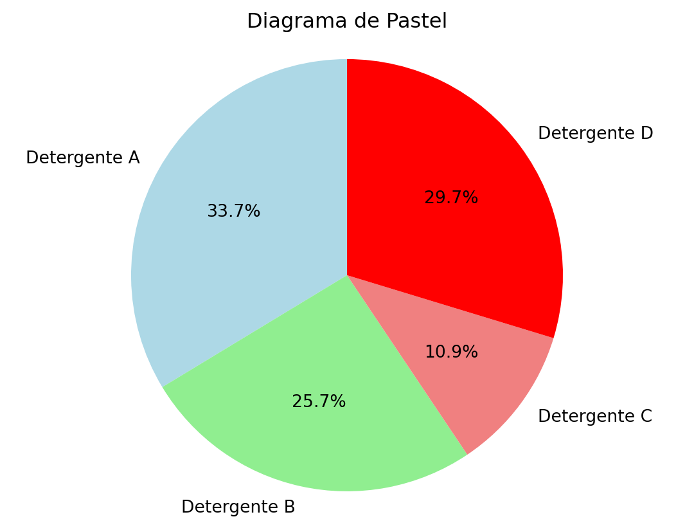
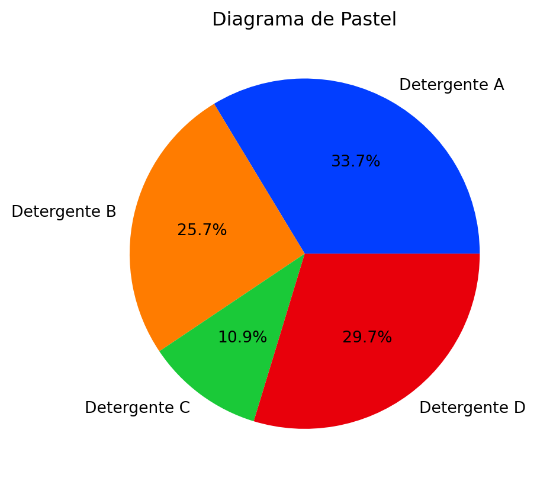
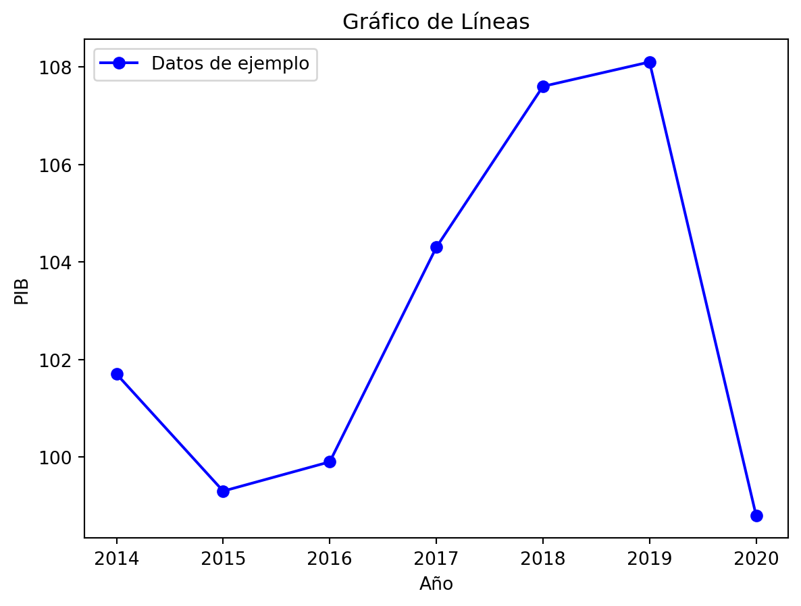
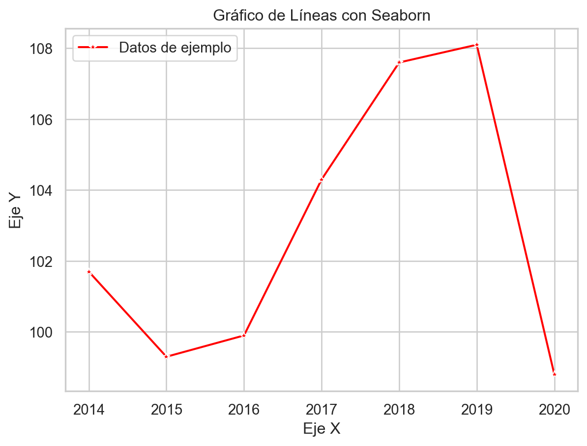

import numpy as np
import seaborn as sns
import matplotlib.pyplot as plt
import pandas as pd
from sklearn import datasetsExploración y visualización de datos con Matplotlib y Seaborn en Python
Resumen
Este capítulo aborda dos importantes bibliotecas de visualización de datos en Python: Matplotlib y Seaborn.
Matplotlib, una librería open source creada en 2002 por John Hunter, es fundamental para la visualización de datos en Python, ofreciendo gráficos en dos dimensiones y visualizaciones dinámicas e interactivas. PyPlot, un módulo de Matplotlib, facilita la adición de elementos como líneas, imágenes o texto en los gráficos.
Seaborn, construido sobre Matplotlib y creado por Michael Waskom, busca simplificar la creación de gráficos estadísticos. Sus características clave incluyen:
Estética agradable con opciones de color y temas predefinidos. Integración con pandas, permitiendo el uso eficiente de DataFrames. Enfoque en visualizaciones estadísticas para análisis de datos. Facilidad de uso con funciones especializadas. Alta capacidad de personalización. Ambas bibliotecas tienen documentación extensa y valiosa para su uso óptimo. La integración con pandas es especialmente útil, como se muestra en los ejemplos de código.
El capítulo continúa con una discusión sobre variables numéricas y categóricas, seguido de ejemplos prácticos para crear diversos tipos de gráficos utilizando Matplotlib y Seaborn, como gráficos de barras, de burbuja, radar, de pastel, de matriz y de líneas. Estos ejemplos muestran la versatilidad y eficiencia de ambas bibliotecas en la representación gráfica de datos.
Finalmente, se destaca la importancia de la selección de colores y etiquetas en la presentación de gráficos. Se aborda cómo el color puede influir en la interpretación y percepción de los datos. Seaborn ofrece diversas paletas de colores (cualitativas, secuenciales y divergentes) para adaptarse a diferentes tipos de datos y visualizaciones. La librería Palettable también se menciona como una alternativa para la selección de paletas de colores. La elección correcta de etiquetas es crucial para evitar ambigüedades y facilitar la comprensión de los gráficos.
En resumen, este capítulo proporciona una comprensión integral de Matplotlib y Seaborn, destacando sus capacidades, integración con otras bibliotecas y su rol esencial en la visualización de datos en Python.
Matplotlib y Seaborn
Matplotlib es una librería open source de Python con la que se pueden crear gráficos en dos dimensiones, visualizaciones dinámicas, interactivas, muy importante para la visualización de datos al momento de realizar un análisis. Fue creada en 2002 por John Hunter, neurobiólogo, quien buscaba una forma de replicar la creación gráfica de Matlab en Python. A pesar del fallecimiento de su creador en el año 2012, esta al ser open source, ha ido mejorando gracias al aporte de la comunidad hasta convertirse en una gran alternativa a Matlab.
Con Matplotlib también se habla de PyPlot, el cual es un módulo que nos presenta funciones para añadir elementos a nuestros gráficos como líneas, imágenes o texto, posee una interfaz sencilla y es muy usado.
Seaborn es una biblioteca de visualización de datos en Python que está construida sobre Matplotlib. Fue creado por Michael Waskom y tiene como objetivo hacer que la creación de gráficos estadísticos atractivos y informativos sea más fácil. Algunos puntos a resaltar serían:
Estética agradable: Seaborn proporciona una interfaz de alto nivel para crear gráficos estadísticos atractivos y con estilo. Ofrece opciones de color predefinidas y temas, lo que facilita la creación de visualizaciones agradables sin tener que personalizar todos los detalles manualmente.
Integración con pandas: Seaborn se integra bien con pandas, otra biblioteca popular de Python para manipulación y análisis de datos. Puedes pasar fácilmente DataFrames de pandas a funciones de Seaborn para crear visualizaciones rápidas.
Visualizaciones estadísticas: Seaborn está diseñado específicamente para la visualización de datos estadísticos. Ofrece funciones para visualizar distribuciones univariadas y bivariadas, matrices de correlación, y más. Esto lo hace especialmente útil en entornos de análisis de datos y estadísticas.
Facilidad de uso: Seaborn simplifica la creación de gráficos complejos mediante funciones especializadas que facilitan la generación de diagramas de dispersión, diagramas de caja, gráficos de barras, entre otros.
Personalización: Aunque Seaborn proporciona una estética agradable de forma predeterminada, también permite una gran personalización. Puedes ajustar colores, estilos y otros aspectos visuales según tus preferencias.
Cabe recordar que tanto Matplotlib como Seaborn tienen su respectiva documentación que vale la pena revisar, la misma ayudará a entender de mejor manera cómo usar las cientos de funciones que poseen cada una.
Ahora veamos como llamar a estas librerias
Nota: Pandas es una librería que se integra de muy buena manera con estas dos, puesto que el uso de DataFrames es muy versátil con esta librería.

Variables numéricas y categóricas
En esta parte vamos a dar un pequeño recordatorio de qué son cada una de las variables
Numéricas: Son aquellas que pueden ser representadas por cantidades numéricas, son discretas o continuas. Algunos ejemplos son la edad, el peso o la altura.
Categóricas: Son aquellas que representan diferentes grupos y no tienen un orden entre ellas. Pueden ser el género, etnia, etc
Ahora veamos cómo crear estos gráficos usando ambas librerias.
Gráfico de barras
Este gráfico es recomendable usarlo cuando comparas variables numéricas con una categórica. Es muy bueno para mostrar diferencias entre los datos de la variable categórica.
# Creamos 3 variables
nombres = ["Edgar", "María", "Pablo","Alex"]
edad = [26,25,24,28]
estatura = [171,170,178,185]
#Vamos a crear un gráfico simple de barras, que muestre el nombre de cada uno y sus distintas edades
plt.bar(nombres, edad, color='red')
# Agregamos etiquetas y el título
plt.xlabel('Nombre') #Eje x
plt.ylabel('Edad') #Eje y
plt.title('Diagrama de Barras') #Titulo
# Mostrar el diagrama de barras
plt.show()
Listo, hemos creado nuestro primer gráfico. Ahora, usaremos otra librearia para crear lo mismo
#Creamos un datafrme con los datos anteriores
datos = {
'nombres': ["Edgar", "María", "Pablo","Alex"],
'edad' : [26,25,24,28],
'estatura': [171,180,189,165]
}
df= pd.DataFrame(datos)
# Se crea el gráfico
sns.barplot(x='nombres', y='edad', data= df)
#Titulos y más
plt.xlabel('Nombre')
plt.ylabel('Edad')
plt.title('Diagrama de Barras')
plt.show()
Como podemos observar, usando la primera opción no fue necesario crear un dataframe, sin embargo en la segunda tuvimos que hacer uso del mismo y además saber los nombres de las variables para saber qué vamos a graficar, por tanto el uso de una u otra dependerá de cada uno. Veamos más ejemplos de otros gráficos muy usados en el data storytelling.
Gráfico de barras agrupado
Es similar a un gráfico de barras solo que las categorías pueden mostrar más de una variable. Es recomendable usarlo cuando quieres contrastar dos variables relacionadas.
# Usando matplotlib el código es el siguiente
x= np.arange(4) #creamos un arreglo con numpy con el numero de variables, 4 nombres
ancho = 0.40
# Se crean ambos gráficos
plt.bar(x-0.2, edad, ancho)
plt.bar(x+0.2, estatura, ancho)
plt.show()
#Usando Seaborn tenemos
sns.barplot(data=df, x='nombres', y='edad', label='edad', color='blue')
sns.barplot(data=df, x='nombres', y='estatura', label='estatura', color='orange', bottom=df['edad'])
# Configurar etiquetas y leyenda
plt.xlabel('Nombres')
plt.ylabel('Valores')
plt.title('Gráfico de Barras Agrupadas usando Seaborn')
plt.legend()<matplotlib.legend.Legend at 0x1f212857c50>
Gráfico de burbuja
Es un gráfico que muestra datos en tres dimensiones en un plano de dos, la tercera sería el tamaño de la burbuja, sirve para mostrar la difencia entre conjuntos de la misma variable u otras.
#Leemos el archivo de datos
archivo_excel = 'co2.xlsx'
datos_excel = pd.read_excel(archivo_excel)
col1=datos_excel['Country Name'].head(4)
col2= np.arange(1,5)
tamanio= datos_excel['2020'].head(4)
plt.scatter(col1, col2, s=tamanio, alpha=0.5)
# Personalizar el gráfico
plt.title('Emiciones de CO2 en 2020')
plt.xlabel('Países')
# Mostrar el gráfico
plt.show()
Gráfico de araña (radar chart)
Este gráfico es útil para comparar varias categorías o variables en relación a un conjunto de ejes en común.
# usaremos nuestro archivo de emisiones de Co2
datos1 = datos_excel.loc[8,['1990','2000','2010','2020']]
datos2 = datos_excel.loc[12,['1990','2000','2010','2020']]
datos11 = datos1.tolist()
datos22 = datos2.tolist()
# Primer gráfico
categorias1 = ['1990', '2000', '2010', '2020']
valores1 = datos11
# Segundo gráfico
categorias2 = ['1990', '2000', '2010', '2020']
valores2 = datos22
# ángulo de cada eje
angulos = np.linspace(0, 2 * np.pi, len(categorias1), endpoint=False)
# Asegurar que el gráfico es circular
valores1 += valores1[:1]
valores2 += valores2[:1]
angulos = np.concatenate((angulos, [angulos[0]]))
# Crear subgráficos
fig, ax = plt.subplots(subplot_kw={'projection': 'polar'})
# Creamos el primer gráfico de telaraña
ax.plot(angulos, valores1, label='Antigua y Barbuda', marker='o')
ax.fill(angulos, valores1, alpha=0.25)
# Creamos el segundo gráfico de telaraña
ax.plot(angulos, valores2, label='Burundi', marker='o')
ax.fill(angulos, valores2, alpha=0.25)
# Personalizar el gráfico
ax.set_xticks(angulos[:-1])
ax.set_xticklabels(categorias1)
# Mostrar leyenda
ax.legend()
plt.show()
Diagrama de pastel
Sirven para comparar porcentajes de cierta variable y es recomendable usarlo cuando se quiera resaltar el mayor porcentaje de datos en nuestras variables.
#creamos nuevas variables
objeto = ['Detergente A', 'Detergente B', 'Detergente C', 'Detergente D']
cantidad = [34,26,11,30]
plt.pie(cantidad, labels=objeto, autopct='%1.1f%%', startangle=90, colors=['lightblue', 'lightgreen', 'lightcoral','red'])
# Configuración adicional
plt.axis('equal')
plt.title('Diagrama de Pastel')
# Mostrar el gráfico
plt.show()
#Usando Seaborn, junto con matplotlib
colores = sns.color_palette("bright")
plt.pie(cantidad, labels=objeto, colors=colores, autopct='%1.1f%%')
plt.title('Diagrama de Pastel')
plt.show()
#Aqui hemos usado la paleta de colores de seaborn 
Gráfico de lineas
Es muy útil para mostrar como evolucionan los datos a través del tiempo.
#Crearemos variables con el PIB del país a traves de los años
anio = [2014,2015,2016,2017,2018,2019,2020]
pib = [101.7,99.3,99.9,104.3,107.6,108.1,98.8]
plt.plot(anio, pib, marker='o', linestyle='-', color='b', label='Datos de ejemplo')
# Titulos y más
plt.title('Gráfico de Líneas')
plt.xlabel('Año')
plt.ylabel('PIB')
plt.legend() # Muestra la leyenda si se proporcionan etiquetas
# Mostrar el gráfico
plt.show()
# Usando Seaborn
sns.set(style="whitegrid")
sns.lineplot(x=anio, y=pib, marker='*', color='red', label='Datos de ejemplo')
# Títulos y más
plt.title('Gráfico de Líneas con Seaborn')
plt.xlabel('Eje X')
plt.ylabel('Eje Y')
plt.legend()
# Mostrar el gráfico
plt.show()
Presentación de gráficos: paletas de color y etiquetas
En el data storytelling el color juega un papel muy importante ya que estos deben ser relevantes. La percepción del color se estudia en varias disciplinas, desde psicología hasta optometría. La interpretación del significado del color esta fuertemente influenciada por factores ajenos a uno, como pueden ser la religión o las costumbres.
Si lo que deseamos es comunicar de manera efectiva alguna información es escencial comprender las necesidades, costumbres y actitudes del receptor de la misma. Es así que para seleccionar el color podemos guiarnos por:
Contraste en los colores:
Al momento de escoger el color debemos darnos cuenta en como estos ayudan a resaltar una idea o mostrar una diferencia.
Metáfora en los colores y degradados:
Los colores como una metáfora se refiere a cuando los usamos con un significado en la sociedad, por ejemplo el rojo para decir parar o el verde para seguir. El degradado se refiere a escalas que crecen o decrecen según algunos valores.
Para ahondar más en el tema hablemos de las paletas de colores en seaborn, esta librería facilita el uso de los mismos y nos da pistas de cómo encontrar la mejor solución para nuestro trabajo. Podemos clasificar las paletas en tres categorías:
Paletas cualitativas
Paletas secuenciales
Paletas divergentes
Paletas cualitativas
Es recomendable usar las mismas con datos categóricos, ya que su variación se enceuntra en el componente del tono. Uno puede ver los diez tonos usando el siguiente código
sns.color_palette()Uno puede comparar esta paleta de colores con la derterminada de matplotlib la cual es más intensa, además seaborn cuenta con 6 variaciones de la misma.
Paletas secuenciales
Esta paleta es apropiada cuando los datos varían desde valores bajos hasta valores altos. En donde varía esta paleta es en la luminancia. Existen varias paletas con esta característica en Seaborn por lo que tenemos varias opciones para elegir, a continuación mostramos algunas que se pueden visualizar
sns.color_palette("rocket", as_cmap=True)
sns.color_palette("mako", as_cmap=True)
#Paletas de una solo color
sns.light_palette("seagreen", as_cmap=True)
sns.dark_palette("#69d", reverse=True, as_cmap=True)blend

under
bad
over
Paletas divergentes
Estas se usan para datos en donde los valores altos como los bajos son de interés, a menudo con punto medio sin tanta importancia. Aquí debemos tener en cuenta que debe haber dos tonos dominantes, uno en cada polo.
Para ver lo que nos ofrece Seaborn podemos usar el siguiente código
sns.color_palette("vlag", as_cmap=True)
sns.color_palette("icefire", as_cmap=True)icefire
![icefire colormap]( "icefire")
under
bad
over
Cabe destacar que toda esta información se encuentra más detallada en la página oficial del paquete seaborn
https://seaborn.pydata.org/tutorial/color_palettes.html
Existe otra librería que nos deja escocger nuestras paletas de colores, esta es `Palettable`. Aquí esta un link directo a su página en github
https://jiffyclub.github.io/palettable/
Hablemos ahora de las etiquetas de los gráficos, las cuales facilitan la compresión del mismo y sirven de guía para quien va dirigido. Por la misma razón debemos escoger etiquetas que no se presten para ambigüedades. Al momento de poner nuestras etiquetas debemos pensar que otras interpetaciones puede tener nuestro gráfico y luego de ello escoger la mejor que resalte lo que deseamos expresar.